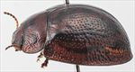
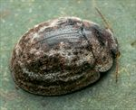
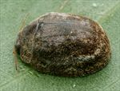
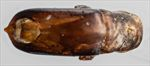
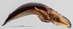
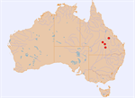

Click on images to enlarge
_SM.jpg){kind=link}

Male, Morven, southern Queensland


Male, Morven, southern Queensland


Female, Capella, central Queensland


Aedeagus, dorsal view (Morven, southern Queensland)


Aedeagus, lateral view (Morven, southern Queensland)


Distribution
Name
Trachymela sp. Ta216
Reference specimen
2020-169, Morven, Queensland.
Adult Description
Length: ♂ 5.3–5.9 mm (n=3), ♀ 5.8–6.4 mm (n=4).
Colouration:
- Head: Dark brown, clypeus black, sometimes with black extending posteriorly for a short distance as a broad band along central suture, mandibles dark brown with black tips; labrum straw-brown; antennomeres 1–7 light to mid-brown, 8–11 usually darker, sometimes much darker but not black.
- Pronotum: Dark brown, concolorous with head, disc with a black macula on each side that is often relatively small and round but may be extended laterally or longitudinally, rarely merging across centre line, often a round black macula is present in foveal area behind each eye.
- Scutellum: Black, or, rarely, very dark brown bordered in black.
- Elytra: Dark brown, concolorous with pronotum, scattered with a network of black areas that coincide with pustules and raised interstices, sometimes the black area extends over almost the whole of disc, a large black raised area is situated in centre of edge of disc, elytral suture black, punctures are concolorous with interstices, humeral callus black.
- Venter & Legs: Venter black, sometimes with dark brown areas, especially towards posterior; legs black or very dark brown, inside surface of epipleura brown or partially black, if the latter then thin strip along outside margin usually brown.
- Cuticular Wax: Brown interspersed with grey, the grey usually most concentrated along lateral margins of pronotum and in two partially interrupted bands on the elytra, one that extends from the anterior edge just above humeral callus towards suture at a point a little posterior to middle, the other extends from behind the grey area on lateral margins of pronotum and continues to suture at about halfway between first band and apex, a third and much thinner band of grey is sometimes present along margin of disc, flecks of grey may also be present between these bands, particularly adjacent to elytral suture; the anterior half of elytral suture (including scutellum) is broadly wax-free.
Morphology:
- Shape: Noticeably flattened (H/BL: ♂ 0.37–0.41, ♀ 0.37–0.41), greatest height viewed laterally at about middle of elytral margin.
- Head: Puncture size variable, moderate to coarse (pd ≈ 2–3×ef), often uneven; small, elevated areas sometimes present behind fronto-clypeal suture. Antennae short (AL/BL: ♂ 32–38%, ♀ 30–34%), filiform.
- Pronotum: Almost evenly curved transversely between foveal areas with lateral margins noticeably explanate, foveal depression absent with a clearly defined, almost round and more sparsely punctured elevated area in middle in its stead, puncturation on disc clearly impressed, similar or slightly smaller than on head, evenly to somewhat unevenly and moderately densely distributed in discal area with much finer punctures scattered between them, punctures becoming much coarser from level of inner edge of eye to lateral margins, interstices smooth and nitid in discal area. Front margins join lateral margins in a smoothly rounded right-angle, with lateral margin almost straight or very lightly curved for more than half its length before curvature increases towards rear margin.
- Scutellum: Unpunctured or sparsely punctured, rarely more densely, with punctures smaller and less clearly impressed than those on adjacent area of pronotum.
- Elytra: Surface evenly curved transversely, lightly curved longitudinally in anterior half, then noticeably more strongly curved towards apex, a very shallow depression extends across surface just in front of middle, punctures large and distinct and relatively evenly distributed between small isolated verrucae and more extensive elevated areas, verrucae and elevated areas not clearly aligned within longitudinal series, the latter sometimes extending over multiple series of punctures, longitudinal ridges may be present, particularly VR3 anterior to median depression and VR5/VR7 posterior to it, a slightly raised transverse ridge is rarely present just behind median depression, surface continuous or very slightly discontinuous under humeral callus, suture carinate in posterior third, lateral margins straight or slightly curved, rarely oblique in anterior third. Vertical extension of epipleura moderate (HCE/PW = 0.35–0.39).
- Venter: Prosternal process almost parallel-sided and broad, rarely broadest anteriorly, open anteriorly, setae sparsely scattered over prosternal process and mesoventrite, a single seta on anterior and median trochanter; front edge of metaventrite beveled, truncate.
Male Genitalia (Aedeagus):
- Dimensions: Short (LPE/BL: 25–28%).
- Dorsal view: Sides of shaft almost parallel from basal sulcus to about middle of ostium (or converging slightly, see notes) or very slightly sinuate, then converging towards apex in a smooth arc with the last section before apex almost straight; dorsal surface strongly and smoothly sclerotized with dorso-median channel absent; tip protruding and almost triangular; ostium relatively small, roughly oval (length/width ≈ 10/7), posterior half shaped as a triangle with noticeably sinuate sides (or ostium much longer than wide, ≈ 11/6, with the widest point close to apex and posterior section forming a long triangle – see notes); dorsal ostial processes reach its apical edge when extended.
- Lateral view: Shaft lightly and quite evenly curved throughout, thinning towards apex over 15% of length, tip deflexed, flagellum almost invariably broken off.
Immature Stages
Unknown.
Similar species
- Ta135: This species from the Kimberley region in far N.W. Australia, so far known from only two female specimens, is very similar structurally and may be the same species.
- Ta82: This slightly smaller species is also very similar. It differs in the possession of a more mottled wax pattern (though it can quite closely resemble that of Ta216 in a few specimens). The aedeagus is similar in structure, but the ostium is more circular in shape, with its rear edge better defined so that the dorsal ostial processes do not merge smoothly into the dorsal surface.
- Ta57: Individuals of this species found on box eucalypts (especially Eucalyptus populnea) have a similar distribution of cuticular wax, a similar pattern of verrucae and elevated interstices on the elytra and they share the wide and parallel-sided prosternal process. However, they are larger and the shape of the aedeagus is quite different.
Notes
- Host Associations: Found on the box eucalypt species Eucalyptus populnea, E. coolabah, and E. cambadgeana (all Symphyomyrtus : Adnataria : Apicales).
- Morphological Variation: The aedeagus of the male collected from E. cambadgeana [2021-197] exhibits some quite substantial differences from that of other specimens. The ostial opening is much longer and the aedeagus, viewed dorsally, thins noticeably from the basal suture towards the middle of the ostium rather than being almost parallel-sided over this section. There is little else that distinguishes this specimen and the other collected from E. cambadgeana (the female [2021-198]), except that the black markings on the pronotum are quite reduced compared to other specimens, with the foveal black mark absent in both. These differences suggest that the E. cambadgeana specimens may be distinct from Ta216.
Copyright © 2026. All rights reserved.